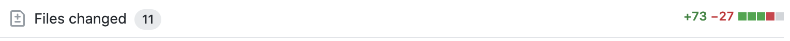

Small Pull Requests
We've all seen Pull Requests (or PRs) that are so large that they are daunting to review, or the PR covers so many different topics that it's hard to keep things straight. I've seen PRs where there are refactors, renames, many business logic additions, helper method introductions, integrations for all the things, sometimes UI related work, and hopefully some tests. That makes for a large PR, like this one:
When we're asked to review a PR like that, it's easy to get frustrated. Especially because that is an actual code change and not a one off that wasn't included in the .gitignore by accident. When confronted with a massive code change for review, I found myself asking questions I couldn't answer.
- "Where do I start?"
- "What am I looking at?"
- "What does it do?"
- "How does it work?"
Frankly, these are hard questions to answer when you're looking through 20+ files in a black box, wading through multiple classes and concepts, and are forced to literally try and piece an expert level puzzle together.
Fortunately, there is a remedy to this problem. Small Pull Requests.
What is a small PR?
Put simply, a Small Pull Request is a code change of small conceptual complexity, preferably a singular conceptual change.
It's that simple. The hard part is restraint.
Often, when we approach a problem, we first go to the code to explore and figure things out. This is a natural and common way we seek to solve the tasks before us, and that approach isn't a bad one. However, what we choose to do after we have explored that problem and decide on the solution can be problematic. It feels natural to keep fighting and slay the dragon then and there. After all, we just figured out the problem, the code is working... "Ship it!"
NO!
What we should do is slow down and move forward using what I call the Single Conceptual Change Principle.
Single Conceptual Change Principle: The conscious scoping of code changes into small related units
When exercising the single conceptual change principle the natural by-product is a surprisingly small amount of changed or added code for review. Like this one:
What do you mean by "singular conceptual change?"
I'm glad you asked. I'll illustrate with the following scenario:
You are tasked with logging errors because QA found a bug that's hard to reproduce. Bad news is, there is no logging in your app currently so you've got some work cut out for you. After some digging around you find a new service that is cheap and easy to integrate, so you go ahead and add that dependency to your project. While you're in there, you create a custom logger to reduce the amount of code you need to write to send the errors you want to send with the user information that may be helpful to unwind the errors later. You test it, it works. So now you decide to go and add the logging event to every button press and caught exception in your application. It took three days to figure it all out and push up your code, but it's all there. "No stone left unturned," or so you think.
You requested review of your large PR at 1500 lines of code and 56 files changed three days ago and it's still not approved, so you badger someone to get to it and they push it through... along with 4 new bugs.
Make it smaller
That scenario could have gone differently. Those bugs could have been caught and the code could have been merged in sooner if it had been broken apart. The Pull Requests could have looked more like this:
| PR Scope | Change Footprint | Feedback |
|---|---|---|
| Adds logging dependency | 3 files 36 lines of code | Thumbs Up |
| Creates logger class that logs fatal and not fatal messages + tests | 2 File changed, 82 lines of code | Questions and Conversation |
Creates UserInfo object to get passed along with logged errors for debugging ease | 1 file changed 24 lines of code | Thumbs Up |
Refactors logger to use optional UserInfo object + tests | 2 files changed 42 lines of code | Comments and minor optimizations |
| Use logger at suspected failure points | 8 files changed 94 lines of code | 2 Defects found, accidentally deleted stuff you didn't mean to |
| Use logger at other high risk points... | 7 files changed ... etc., | |
| + however many more changes you decide to make. |
Each one of those PR's covers a small amount of work. The person reviewing them will be able to review it with ease, and will more likely catch errors made or leave feedback that could enhance your design. Plus, because the PRs are so small, people get to the review earlier, and complete it far faster than those large ones.
How to be effective with Small Pull Requests
1. Understand the Problem
First we need to understand the problem. Here is where we explore in code, ask our questions and get clarity on the task, or try and cut scope if we can.
2. Design First
After we've researched the problem and found some potential solutions, often times the next best foot forward is to write up a design document and send it to our peers.
Seems heavy handed? Sometimes it is. Even so, the exercise is worth it. When we get good at it, we can skip it for the truly small stuff. At the very least we should grab someone who would generally review our code (if not possible anyone nerdy will do), take them to a whiteboard and start explaining the problem, what was learned, and how we plan on solving it.
Why?
Several awesome things happen here.
- Steps can be named and PR's can be planned in advance
- The person or persons reviewing our code have more context. This allows them to push back on stuff that is important, and to not push back on stuff that they know will be addressed in the coming small prs.
- We get feedback before we implement a solution. This can sometimes alter the solution so dramatically and save an incredible amount of time.
- Naming and conceptual integrity concerns can often be addressed and solved before code review
There are many more benefits to pairing with others on designing the solution for a problem.
3. Commit to Single Concept PRs
By not breaking the work apart, the code change will still end up being a monster that the team will take time to review and will often miss defects or other code smells.
Single Concept PR's for dummies
- Understand Problem & Plan it out
- Add Thing A with Tests (1 PR)
- Add Thing B with Tests (1 PR)
- Wire Thing A + B together + tests (1 PR)
- Repeat steps 1 - 3